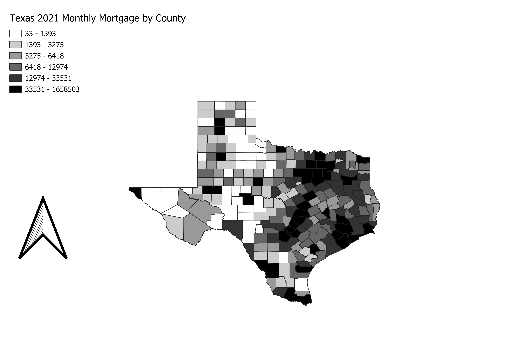

Homework 7
Zack M.
These maps represent the ratio of Monthly Mortgages. I took yearly and divided by 12 to get these cvalues This map is in County in the Texas State Projection.

Link to shapefile
CSV dataset
https://www.nar.realtor/research-and-statistics/housing-statistics/county-median-home-prices-and-monthly-mortgage-payment